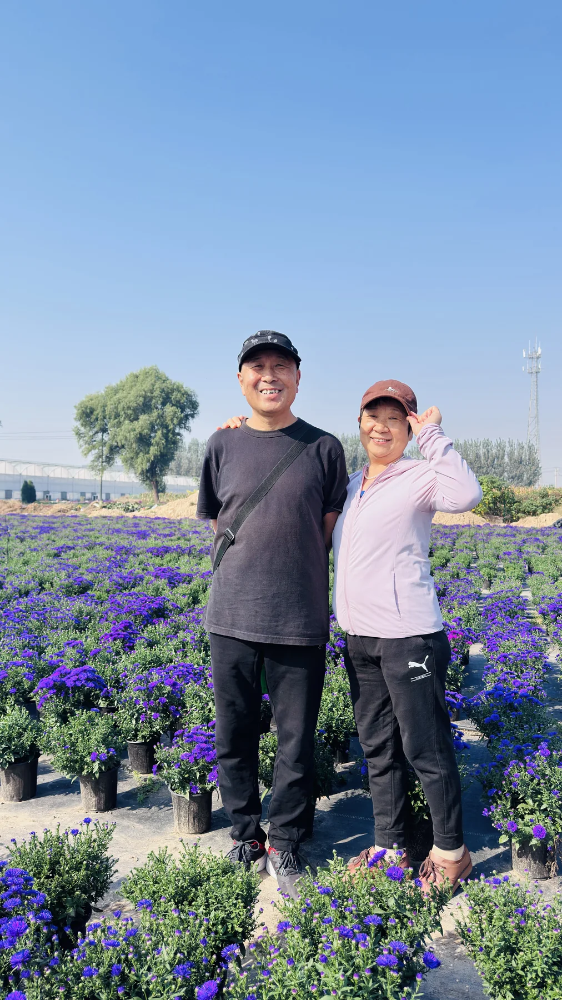
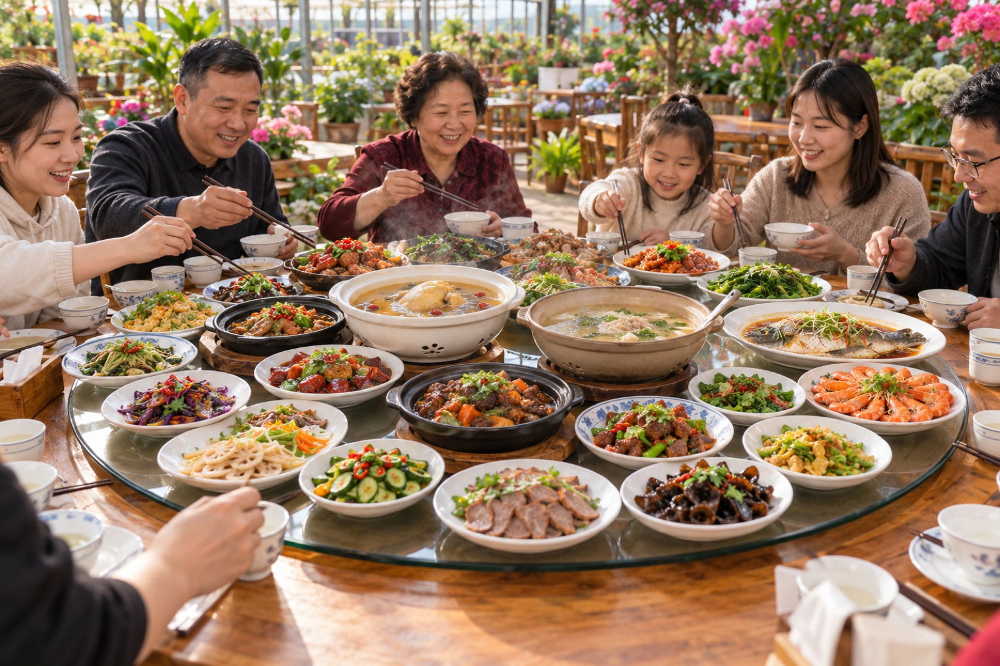
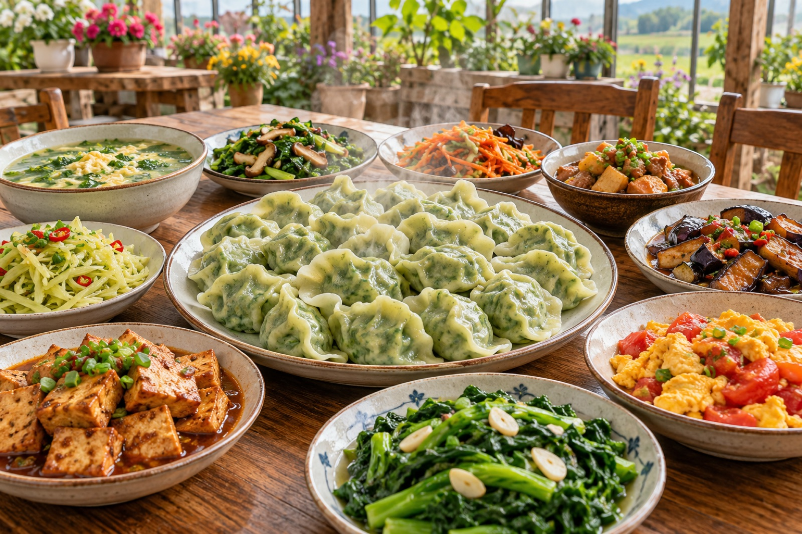
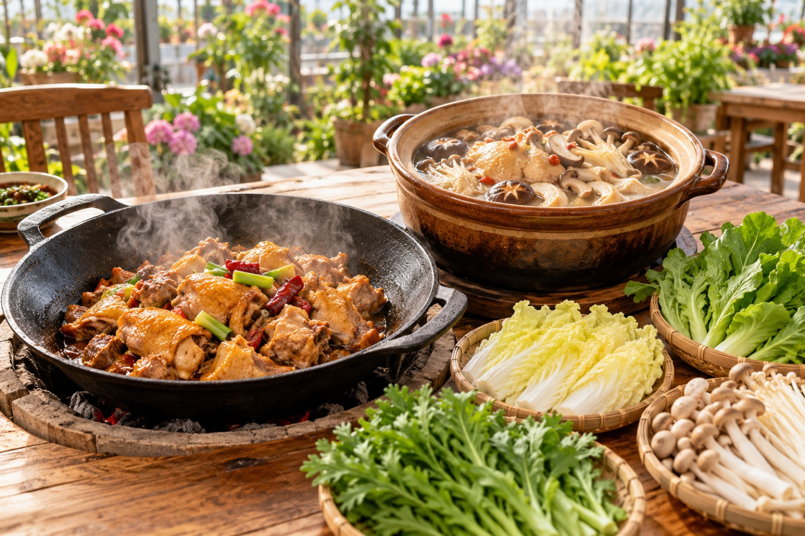
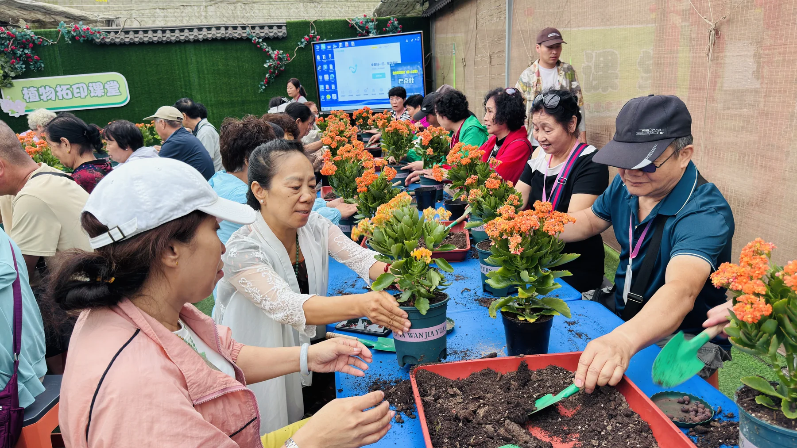

01 · 花海
把照片拍在花里
散步、赏花、拍照，让普通的一天也有值得收藏的颜色。
生活不只是在赶路，
也要停下来，闻一闻花香。
A DAY AT HUAMAMA FARM
从花海到萌宠，从植物课堂到农家饭，想热闹就一起玩，想安静就慢慢走。

散步、赏花、拍照，让普通的一天也有值得收藏的颜色。
 AI 场景示意
AI 场景示意看小羊、小兔、鸵鸟、孔雀和小鹿，也可以参与投喂互动。

看见、触摸、提问、动手，把书本里的知识变成真实体验。

植物拓印、盆栽、插花和花环，让一段自然时光留下作品。

拔河、小鸡下蛋、一圈到底、毛毛虫大战，让团队在游戏里靠近。

地锅鸡、饺子宴、桌餐和大锅菜，吃的是农家味，也是相聚的热气。

EASY TO VISIT
购票赠花卉一盆，带一份自然回家。
用餐客人可体验园区基础参观与游玩项目。
最好的人间烟火，
是喜欢的人都在桌边。
FARM TO TABLE
先用场景图把餐饮框架搭起来，后续可直接替换为农场真实菜品照片。



CHOOSE YOUR DAY
点击分类查看详细项目。手机端减少长表格堆叠，需要时再展开。
风景会留在照片里，
一起笑过的人，会留在心里。
ROOTED IN HORTICULTURE
绿万家花妈妈生态游乐农场，延续着郑州绿万家园艺有限公司二十余年的园艺积累。
郑州绿万家园艺有限公司成立于 2003 年，位于荥阳高村乡史坊村，占地约 300 亩，总投资 4000 万元，建有现代化连栋温室 60000㎡，培育凤梨、龟背竹、红掌、波斯顿蕨、常春藤、长寿花、室外菊花等三十余种花卉。
创始人崔继梅毕业于西北农林大学观赏园艺专业。她带领团队把多年花卉生产经验延伸到自然科普、家庭园艺、研学、亲子和生态休闲，让园艺成为可以参与、可以分享、也可以带回家的生活方式。


COME SPEND A DAY IN FLOWERS
微信预约时告诉我们：来多少人、具体吃什么、团建项目要不要教练。